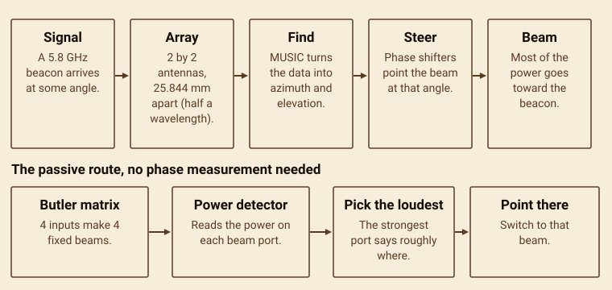
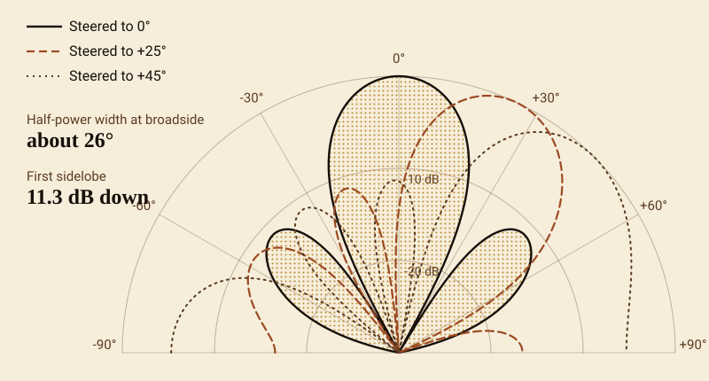
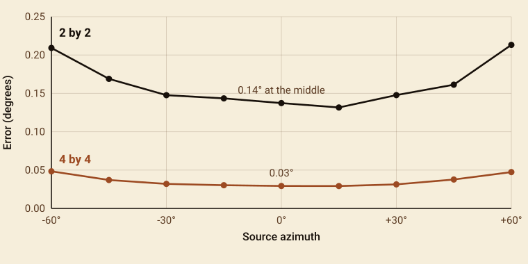
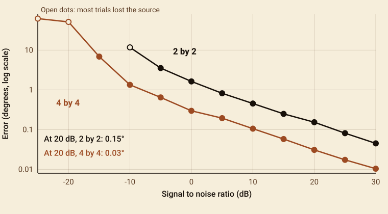
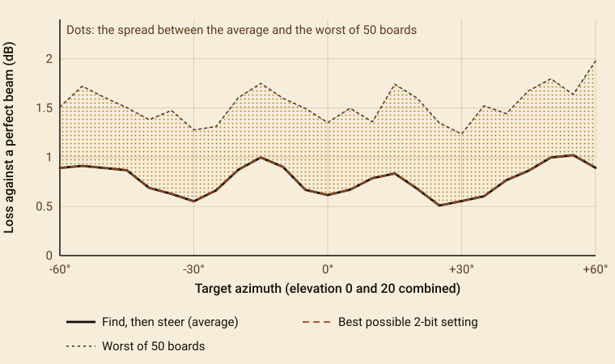
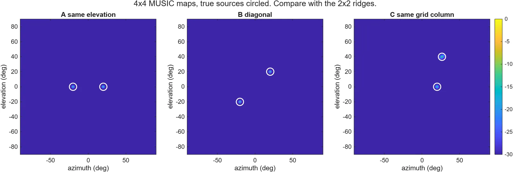
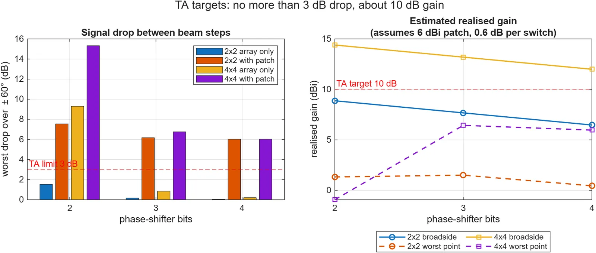

UT Dallas RIDE
RF direction finder and Butler matrix
A 5.8 GHz antenna array that finds where a signal comes from, then steers its beam toward it. Includes a Butler matrix that steers the beam with fixed phase shifts.
- Private repo

By the numbers
- 5.8 GHzoperating frequency, wavelength 51.688 mm
- 0.022°direction error of the 4x4 array at 20 dB, over 300 trials
- 4.5xless error than the 2x2 array, as the accuracy formula predicts
- About halfof the team’s commits
The problem
Which way is a radio signal coming from, and can the antenna point itself there?
A signal at 5.8 GHz reaches each antenna in an array a tiny moment apart. That delay is the only clue to the direction. To use it you need the phase at every antenna, measured together.
Four separate receivers cannot do that cheaply. Each has its own clock and its own random phase offset every time it powers up, so the differences between them mean nothing. Purpose-built direction finders fix this with a shared clock and calibration hardware. We have a $100 budget per group.
The way around it is a Butler matrix: a passive network that forms several fixed beams. A power detector then only has to read how strong the signal is on each beam port. No shared clock, no phase calibration. The course also asked for software, theory and simulation first, so the numbers on this page all come from simulation.
How it works
A wave arriving at angle θ travels a little further to each next antenna. With spacing d that gives a phase step of 2πd sin(θ)/λ between neighbours. At half-wavelength spacing, 25.844 mm at 5.8 GHz, a source at 30 degrees gives exactly 90 degrees. The simulation measured 90.00, which confirmed the equation everything else rests on.
- ListenThe array hears the signal. Each antenna hears it a little later than the next.
- FindA direction finder (beamscan, MVDR or MUSIC) turns those phase steps into an angle.
- SteerThe same equation run backwards: give each antenna the opposite phase and all the signals line up and add.
- Or skip the findingA Butler matrix makes four fixed beams. Read the power on each port, pick the loudest, point there.

Try it: find, then steer
Auto: beam locked on the beacon at +25.0 degrees.
A live sketch of the loop on a four-element line. Tap the plot to move the beacon. The port buttons show the four fixed beams of a textbook 4-port Butler matrix, with phase steps of -135, -45, +45 and +135 degrees. Drawn from the standard formulas, not measured data.
What the simulations showed
Every 2x2 and 4x4 number can be regenerated from the MATLAB scripts with fixed random seeds.
- A grid sees two angles, a line sees oneA line of antennas cannot tell a source above it from one below it. A 2x2 grid measures phase along two axes. A source at azimuth 30 and elevation 20 came back as 30.0 and 20.0. The 2x2 also has no sidelobes, because two elements per axis cannot make them.
- More elements, a sharper and steadier estimateAt 20 dB the 2x2 is off by about 0.14 degrees and the 4x4 by 0.03. The 4x4 keeps working about 10 dB deeper into the noise, breaking near -15 dB instead of -5 dB. The beam is narrower too: 26 degrees across for the 4x4, 60 for the 2x2.
- Two sources, and where each method gives upOn a line array MUSIC separates two sources 5 degrees apart, MVDR 12 and plain beamscan 40. On the 2x2, sources must differ along both grid axes, and then MUSIC separates them from 14 degrees apart. The 4x4 manages about 4 degrees, even for sources that share an axis.
- EchoesA coherent echo makes MUSIC collapse to 4 percent success on a line array while beamscan is untouched. On the 2x2 the order flips: MUSIC falls to 0.14, forward-backward averaging brings it back to 0.98, and beamscan fails because its beam is too wide.
- Why 25.844 mmAt a full wavelength of spacing, one source shows up four times. That is why the elements sit half a wavelength apart.
- TaperingChebyshev weights at -20 dB are the best trade for a steered beam on the 4x4: a cost of 4 to 8 degrees of extra beamwidth and 0.6 to 1.6 dB of gain. Steered to 30 degrees, no taper beats uniform weights near the edge.


Pointing the beam with a few phase states
Real phase shifters have few settings, so the beam cannot point exactly where the finder says. The question is how much signal that costs.
With 2-bit phase shifters the average loss is under 1.1 dB at every target angle and the worst single case is 2.0 dB. Skipping the search step, or knowing the true angle, hardly changes it. Worst-case drop between neighbouring beam steps on the 2x2 is 1.52 dB with 2 bits, 0.17 with 3 and 0.04 with 4. On the 4x4 it is 9.3, 0.85 and 0.21 dB.
These all assume ideal elements. Adding about 0.5 dB and 5 degrees of mismatch between elements is the next test.

Where the build stands
Hardware is parked while the simulations finish. On Nov 4 we compared three ways to build the 5.8 GHz board, using circuit models only. The lab can only make single-layer boards, which pushed the question.
| Option | Phase error | Worst return loss | Total with parts |
|---|---|---|---|
| 4-layer, ordered | 1.0 deg | 12.4 dB | $142 |
| 2-layer, ordered | 6.0 deg | 7.3 dB (misses 10 dB) | $107 |
| Single-layer, lab made | 2.6 deg | 10.3 dB | $83 |
The recommendation is the lab-made single-layer board: it is the only option inside the $100 limit. Board prices for the ordered options are our estimates.
What I did
- Wrote the MATLAB models and experiments that find a signal’s direction and steer the beam.
- Compared 2x2 and 4x4 antenna arrays.
- Designed and simulated a Butler matrix network with 22.5, 45, 90 and 180 degree phase shifters.
- Measured the network on a vector network analyzer and checked it against the simulation.
- Wrote most of the reports and docs, and about half the commits on a 3-person team.
What I learned
- No single best algorithmOn one source all three tie. On two sources MUSIC is eight times finer. With echoes on a line array it is the worst. The ranking flips with the test, so every claim needs its test attached.
- Write down what failedEach finding gets a dated file, including the things that did not work. Those were the most useful ones later.
- Perfect hardware is an assumptionEvery result so far assumes ideal elements. Channel errors, patch elements and calibration are the gap between this page and a bench.
Plots from the project

4x4 direction maps. The circles mark the true sources.Plot from the project repo. 
Signal drop and gain against phase-shifter bits.Plot from the project repo. 
The four receiving beams of an ideal 2x2 Butler matrix.Plot from the project repo.